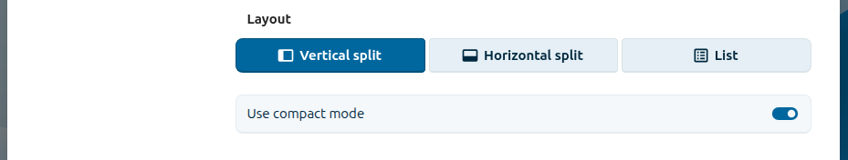
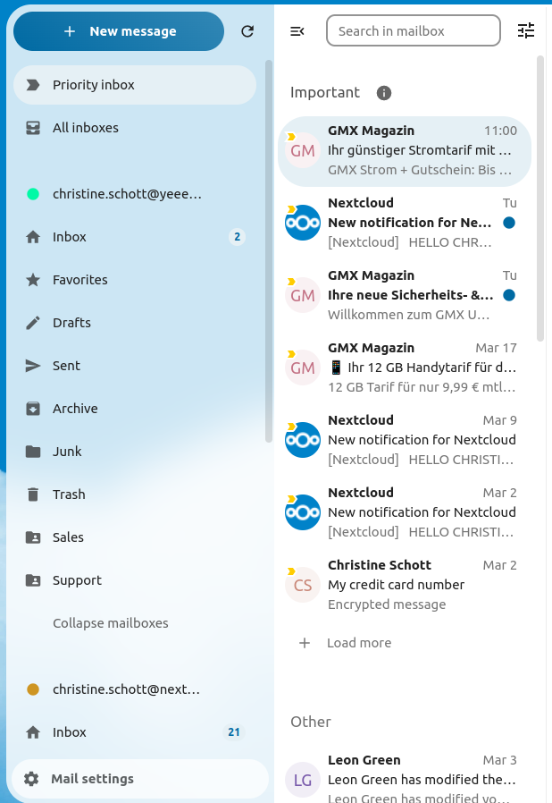

Mail アプリを使用する
注釈
Mail アプリは、デフォルトでは Nextcloud Hub と併せてインストールされますが、無効化することもできます。管理者に問い合わせて下さい。

メールアカウントの管理
レイアウトの切替
Added in version 3.6: Nextcloud 26 or newer
メール設定にアクセスする
List、Vertical split、Horizontal split から選択する

コンパクトモードを使用する
Added in version 5.7: Nextcloud 32 or newer
コンパクトモードは、メッセージをよりすっきりと効率的に表示する方法を提供します。アバターは非表示になり、選択用チェックボックスは常に表示され、メッセージのプレビューは削除されます。スペースを節約できるため、一度により多くのメールを確認できます。
メール設定にアクセスする
Appearance に移動する
コンパクトモードを切替える

メッセージ表示 / 操作モード
Added in version 5.2: Nextcloud 30 or newer
Mail では、2 つの異なるメッセージ表示および操作モード、Threaded と Singleton を切り替えることができます。
In Threaded mode, messages are grouped by conversation. In the folder message list, related messages are stacked so only the most recent message is shown, and all relates messages are shown in message display panel after the stacked message is selected. This is useful for following discussions and understanding the context of replies. In this mode, message operation like move and delete apply to the entire thread, meaning that when you move or delete a thread, all messages within that thread are affected.
In Singleton mode, messages are displayed individually, in both the folder message list and message display panel and operation like move and delete apply to only the selected message. This mode is useful when you want to manage messages separately without affecting the entire conversation.
メール設定にアクセスする
Threaded、Singleton から選択する

新しいメールアカウントを追加する
アプリから Mail アプリを有効にする
ヘッダーのメールアイコンをクリックする
ログインフォームに入力する（自動または手動）

並べ替え順序を変更する
Added in version 3.5: Nextcloud 26 or newer
メール設定にアクセスする
Sorting に移動する
Oldest または Newest のメールを先頭に表示するか選択できます
注釈
This change will apply across all your accounts and folders
お気に入りを上に並べる
Added in version 5.7: Nextcloud 31 以降
この設定により、お気に入りに設定したメッセージを、メッセージ一覧の上部にある別セクションに表示できます。
メール設定にアクセスする
Appearance に移動する
お気に入りを上に並べるを有効にする
送信予約メッセージ
Click the New message button
モーダル作成画面の (…) アクションメニューをクリックする
send later をクリックする

優先受信トレイ
優先受信トレイには、Important と Others の 2 つのセクションがあります。やりとりしたメッセージや重要としてマークしたメッセージに基づいて、メッセージは自動的に重要としてマークされます。最初はシステムに学習させるために手動で重要度を変更する必要があるかもしれませんが、時間とともに改善されます。
自動分類は任意です。アカウントの設定時にオプトアウトできます。分類は、アカウント設定でいつでもオンとオフを切り替えることもできます。

すべての受信トレイ
ログインしているすべてのアカウントのメッセージが、時系列順にここに表示されます。
アカウント設定
次のようなアカウント設定があります：
エイリアス
署名
デフォルトフォルダ
自動応答
信頼できる送信者
…など
メールアカウントのアクションメニューからアクセスできます。必要に応じて、設定の編集、追加、削除ができます。
メッセージを迷惑メールフォルダに移動する
Added in version 3.4: Nextcloud 26 or newer
Mail では、メッセージが迷惑メールとしてマークされたときに、別のフォルダに移動できます。
アカウント設定にアクセスする
Default folders に移動する
迷惑メール用のフォルダが選択されていることを確認する
Junk settings に移動する
Move messages to Junk folder をクリックする

Refresh folder
You can manually trigger a sync of your folder by clicking the refresh button located at the top of the folder list.
Starting from version 5.7 triggering the sync will also refresh the list of folders for the selected account.
統合検索
Mail アプリは、Nextcloud の 統合検索 機能と連携します（詳細は The Nextcloud web interface を参照）。Nextcloud ヘッダーの検索バーを使用して、すべてのアカウントのメールを検索できます。
Mail searches email subjects and sender/recipient fields. To search email bodies, use the folder search feature in the app.
Search in folder
Added in version 2.1: Nextcloud 25 or newer
任意のメールレイアウトのエンベロープ一覧の上部には、メールの件名を検索するための検索フィールドショートカットがあります。version 3.7 以降、このショートカットでは、デフォルトで件名、受信者 (to)、送信者 (from) による検索が可能です。
Advanced search in folder
Added in version 3.4: Nextcloud 26 or newer
検索ショートカットの末尾にあるモーダルから、詳細検索機能にアクセスできます。
メール本文検索を有効にする
Added in version 3.5: Nextcloud 26 or newer
メール本文を検索できるようになりました。この機能は、パフォーマンス上の問題が発生する可能性があるため、オプトイン方式です。
有効にするには：
アカウント設定にアクセスする
Go to Folder search
メール本文検索を有効にする
警告
If you want to also enable it for unified folders you have to do so in Mail settings
有効にすると、メインの検索ボックスで件名とメール本文の両方を検索できるようになり、詳細検索に Body オプションが追加されます。
アカウント委任
The app supports two ways of letting one user act on behalf of another’s mail account.
Sending as another address (server alias)
This lets you send emails from the address of another account.
委任は、管理者がメールサーバ上で設定する必要があります
他のメールアドレスを、自分のメールアカウントのエイリアスとして追加する
メールを送信する際に、送信者としてエイリアスを選択する
警告
The sent email might not be visible to the original account if it’s stored in your personal Sent folder.
Native account delegation
Added in version 5.9: Nextcloud Mail
Native account delegation lets you grant other Nextcloud users access to one of your mail accounts directly from the app, without any server-side alias configuration. A delegate can do everything the account owner can — send, receive, and delete mail on your behalf — except deleting the account or updating its authentication information.
To delegate one of your accounts:
Open the account’s three-dot menu and select Delegate account
In the Delegation dialog, click Add delegate
Use the Select a user field to choose the Nextcloud user you want to grant access to
Confirm with Delegate access
The shared account then appears in the delegate’s account list, marked as delegated.
To remove access:
Open the Delegate account dialog again
Click Revoke next to the delegate you want to remove
Confirm with Revoke access
注釈
Provisioned accounts cannot be delegated.
ゴミ箱の自動削除
Added in version 3.4: Nextcloud 26 or newer
Mail アプリでは、一定日数経過後にゴミ箱フォルダー内のメッセージを自動的に削除できます。
アカウント設定にアクセスする
Automatic trash deletion に移動する
メッセージを削除するまでの日数を入力する
フィールドを空にするか 0 に設定すると、ゴミ箱の保持を無効にできます。
注釈
ゴミ箱の保持を有効にした後に削除されたメールのみが処理されます。

メッセージの作成
Click the New message button
メッセージの作成を開始する
作成画面モーダルを最小化する
Added in version 3.2: Nextcloud 26 or newer
The composer modal can be minimized while writing a new message, editing an existing draft or a message from the outbox. Simply click the Minimize button on the modal or click anywhere outside the modal.

You can resume your minimized message by clicking anywhere on the minimized composer indicator.

Press the Close button on the modal or on the minimized composer indicator to stop editing a message. A draft will be saved automatically into your draft folder.
作成画面での宛先情報
Added in version 4.2: Nextcloud 30 or newer
When you add your first recipient or contact in the 「To」 field, a right pane will appear displaying the saved profile details of that contact. Adding a second contact will collapse the list, allowing you to select and expand any contact you added to view their details. If you prefer to focus solely on writing in the composer, you can hide the right pane by clicking the Expand icon in the composer toolbar. To show the right pane again, simply click the Minimize icon in the same toolbar.
連絡先のメンション
Added in version 4.2: Nextcloud 30 or newer
メッセージ中で @ を入力し、リストから連絡先を選択することで、宛先として自動的に追加できます。
注釈
有効なメールアドレスを持つ連絡先のみが候補として表示されます。
テキストブロック
Added in version 5.2: Nextcloud 30 or newer
テキストブロックは、あらかじめ定義された文書断片で、メール本文に挿入できます。Mail 設定で作成および管理が可能です。作成画面で ! を入力し、リストからブロックを選択するか、作成画面のアクションから挿入できます。テキストブロックはユーザやユーザグループと共有可能です。
送信トレイ
When a message has been composed and the 「Send」 button was clicked, the message is added to the Outbox, which appears at the bottom of the left sidebar.
送信の日時指定も可能です（Scheduled messages を参照）。設定した日時までメッセージは送信トレイに保管され、指定日時になると自動的に送信されます。
送信トレイは、処理待ちメッセージが1件以上あるときのみ表示されます。
You can reopen the composer for a message in the outbox any time before the send operation is triggered.
注釈
送信中にエラーが発生した場合、3つのエラーメッセージが表示されることがあります。
- Could not copy to 「Sent」 folder
The mail was sent but couldn’t be copied to the 「Sent」 folder. This error will be handled by the outbox and the copy operation will be tried again.
- メールサーバエラー
Sending was unsuccessful with a state that can be retried (ex: the SMTP server couldn’t be reached). The outbox will retry sending the message.
- メッセージを送信できませんでした
送信が失敗したかどうかは不明です。メールサーバが送信状態を返さない場合、Mail アプリ側は送信済みか未送信かを判断できません。この場合、メッセージは送信トレイに残り、ユーザがどのように対応するか判断する必要があります。
Folder actions
Add a folder
アカウントのアクションメニューを開く
Click add folder
Add a subfolder
Open the action menu of a folder
Click add subfolder
Shared folder
If a folder was shared with you with some specific rights, that folder will show as a new folder with a shared icon as below:
エンベロープ操作
イベントを作成
特定のメッセージやスレッドから、直接 Mail アプリでイベントを作成します
エンベロープのアクションメニューを開く
More actions をクリック
Create event をクリック
注釈
An event title and agenda are created for you if the administrator has enabled it.
タスクを作成
Added in version 3.2: Nextcloud 26 or newer
特定のメッセージやスレッドから、直接 Mail アプリでタスクを作成します
エンベロープのアクションメニューを開く
more actions をクリック
create task をクリック
注釈
タスクは対応するカレンダーに保存されます。互換性のあるカレンダーが無い場合は、calendar app で新規作成できます。
タグの削除
Added in version 3.5: Nextcloud 26 or newer

自分で作成したタグを削除できるようになりました。機能へのアクセス手順は以下の通りです:
エンベロープまたはスレッドのアクションメニューを開く
「Edit tags」を選択
タグモーダル内で、削除したい具体的なタグのアクションメニューを開いてください。
注釈
「Work」「To do」「Personal」「Later」などのデフォルトタグは削除できませんが、名前の変更は可能です。
AI 要約
Added in version 4.2: Nextcloud 30 or newer
When looking through your folder you will see a short AI generated summary of your emails as a preview.
注釈
この機能を利用するには、管理者による有効化が必要です
クイックアクション
Added in version 5.5: Nextcloud 30 or newer
タグ付け、移動、既読など、通常エンベロープに対して行う操作手順をまとめ、ワンクリックで実行できるクイックアクションとして登録できます。クイックアクションは1つのメールアカウントごとで管理され、「クイックアクション」設定やエンベロープのアクションメニューから作成・管理できます。
注釈
Mark as spam、Move thread、Delete thread など一部操作はクイックアクション内で同時使用できず、並べ替えもできません。必ず最後に実行されます。
注釈
クイックアクションをスレッドで実行した場合、そのスレッド内の全メッセージが対象となることにご注意ください。
メッセージ操作
メーリングリストの購読解除
Added in version 3.1: Nextcloud 26 or newer
一部のメーリングリストやニュースレターは簡単に購読解除できます。Mail アプリがその種のメッセージを識別した場合、送信者情報の横に Unsubscribe ボタンが表示されます。クリックし、確認することでリストの購読解除が行えます。
スヌーズ
Added in version 3.4: Nextcloud 26 or newer
Snoozing a message or thread moves it into a dedicated folder until the selected snooze date is reached and the message or thread is moved back to the original folder.
エンベロープまたはスレッドのアクションメニューを開く
Snooze をクリック
メッセージやスレッドのスヌーズ期間を選択
スマート返信
Added in version 3.6: Nextcloud 26 or newer
Mail アプリでメッセージを開くと、AI が生成した返信案が提案されます。提案された返信をクリックするだけで、作成画面が開き、その内容が自動入力されます。
注釈
この機能を利用するには、管理者による有効化が必要です
注釈
対応言語は使用している大規模言語モデルに依存します
メール翻訳
Added in version 4.2: Nextcloud 30 or newer
Talk と同様に、設定した言語へメッセージを翻訳できます。
注釈
翻訳機能を利用するには、サーバ側で有効化が必要です
注釈
バージョン 5.3 以降、管理者が LLM を有効にしていれば翻訳案が提案されるようになります
スレッド要約
Mail アプリは、3通以上のメッセージが含まれているスレッドを要約できます。
Added in version 3.4: Nextcloud 26 or newer
注釈
この機能を利用するには、管理者による有効化が必要です
注釈
この機能は integration_openai でのみ正常に動作します。ローカルLLMの場合、応答までに非常に時間がかかり、タイムアウトやシステム負荷の原因となることがあります。
フィルタと自動応答
Mail アプリには Sieve スクリプト用のエディタ、自動応答設定画面、フィルタ設定画面があります。Sieve は account settings で有効にしておく必要があります。
自動応答装置
Added in version 3.5: Nextcloud 26 or newer
自動応答はデフォルトでは無効です。手動で設定することも、システム設定（Absence settings section で入力した長期不在メッセージ）に従うこともできます。システム設定に従う場合、不在設定の内容が自動適用されます。
フィルター
Added in version 4.1: Nextcloud 30 or newer
Mail 4.1 ではフィルタールールを設定するための簡単なエディタが含まれています。
注釈
既存フィルターのインポートには対応していませんが、既存フィルターは有効のまま変更されません。万一に備え、Sieve スクリプトエディタから現在のスクリプトをバックアップしておくことをおすすめします。
新しいフィルターの追加方法
アカウント設定を開きます。
アカウントで Sieve が有効になっていることを確認します（Sieve サーバ設定を参照）。
Filters をクリックします。
新しいルールを作成する場合は New Filter を選択します。
フィルターの削除方法
アカウント設定を開きます。
アカウントで Sieve が有効化されていることを確認します（Sieve サーバ設定を参照）。
Filters をクリックします。
削除したいフィルターにマウスオーバーし、ごみ箱アイコンをクリックします。
条件
条件は受信メールの Subject、Sender、Recipient などのフィールドに対して適用されます。これらのフィールドに対して、次の演算子で条件を定義できます。
is exactly：完全一致。フィールドが指定値と完全に一致した場合のみ一致します。
contains：部分一致。フィールド内に指定値が含まれていれば一致します。例：」report」 は 「port」 に一致します。
matches：ワイルドカード一致。」*」 は0文字以上の任意文字、」?」は任意の1文字。例：」report」は」Business report 2024」に一致します。
アクション
指定したテスト条件を満たした場合にアクションが実行されます。利用可能なアクションは以下の通りです：
fileinto：メッセージを指定したフォルダーへ移動します。
addflag：メッセージにフラグを付与します。
stop：このアクション以降のフィルタは実行されません（スクリプトのここで処理停止）。
メッセージからフィルターを作成
Added in version 5.2: Nextcloud 30 or newer
特定のメッセージからフィルターを作成するには、メッセージを開き、右上の3点アイコンからメニューを開き、」More actions」 → 「Create mail filter」 をクリックします。
ダイアログで受信メッセージに一致する条件を選び、」Create mail filter」 をクリックして続行します。

フォローアップリマインダー
Added in version 4.0: Nextcloud 30 or newer
Mail アプリは、送信したメールに返信がない場合に自動でリマインダーを表示します。送信メールはAIが返信が期待されるかどうか判定し、4日経過後は関連メールが優先受信トレイに表示されます。
対象のメールをクリックすると、全受信者にすばやく再送信できるボタンが表示されます。また、個別メールごとにフォローアップリマインダーを無効にすることもできます。
注釈
この機能は管理者により有効化されている必要があります。
セキュリティ
フィッシング検出
Added in version 4.0: Nextcloud 30 or newer
Mail アプリはフィッシングの可能性があるメールを検出し、ユーザに警告を表示します。
以下の項目がチェックされます：
アドレス帳に登録されている送信者アドレスと、メールアカウント上のアドレスが一致しません
送信者が「From」アドレスと異なる独自のメールアドレスを使用しています
送信日時が未来の日時に設定されています
メッセージ本文内のリンクが表示テキストと一致していません
Reply-to アドレスが送信者アドレスと異なっています
注釈
警告が表示されたからといって必ずしもフィッシングとは限りません。これは Mail アプリが危険性を検知したに過ぎません。
内部アドレス
Added in version 4.0: Nextcloud 30 or newer
Mail アプリでは内部アドレスやドメインを追加でき、送受信時にリスト外のアドレスが使われている場合は警告されます。
内部アドレスを追加する方法：
メール設定を開く
プライバシーとセキュリティのセクションへ移動
チェックボックスで内部アドレスを有効にします
内部アドレス追加ボタンをクリックします
アドレスまたはドメインを入力して［追加］をクリックします
ダッシュボード連携
Added in version 1.8: Nextcloud 20 or newer
Mail アプリは Nextcloud ダッシュボード用の2つのウィジェットを提供しています：
未読メール：未読メールを表示するウィジェットです。
重要メール：重要としてフラグ付けされたメールのみを表示するウィジェットです。
これらのウィジェットは、アカウントに設定されているメールアカウントのメールを利用します。
カレンダー連携
Mail アプリは Calendar アプリと連携し、会議招待の管理やカレンダーの最新状態の維持をサポートします。
会議招待
会議招待が含まれるメッセージを受信すると、Mail アプリが添付のカレンダーファイルを自動検出し、回答用の操作セクションを表示します。
操作例：
Accept：招待を承諾
Decline：招待を辞退
Tentatively accept：仮承諾
選択した回答がそのまま Mail アプリから送信され、イベントがメインカレンダーに自動的に追加されます。
会議招待は手動で特定カレンダーに追加することも可能です：
会議招待付きのメッセージを開く
メッセージ下部の添付ファイルセクションまでスクロール
カレンダーファイル（通常は .ics 拡張子）を選択し、三点リーダーメニューをクリックします。
「Import in to calendar」 をクリックし、目的のカレンダーを選択します。
会議招待の自動化
会議主催者が既存イベントに変更（時間や場所など）を送ると、Mail アプリが自動的に処理し、対応するイベントがカレンダーで更新されます。
Added in version 5.7: Nextcloud 32 or newer
Mail を設定して、受信した全ての新しい会議招待を手動受諾なしでカレンダーに自動追加（仮予定）できます。
この機能を有効にするには：
特定のメールアカウントのアカウント設定を開く
カレンダー設定セクションへ移動
Automatically create tentative appointments in calendar を有効にする
注釈
この設定を有効にすると、招待状はメールリストに表示されるだけでなく、自動的にカレンダーへ追加されるようになります。
キーボードショートカット
Mail アプリでは操作効率を上げるためのキーボードショートカットが用意されています。
すべてのサポートショートカット一覧は、インスタンスの Mail 設定画面で確認できます。